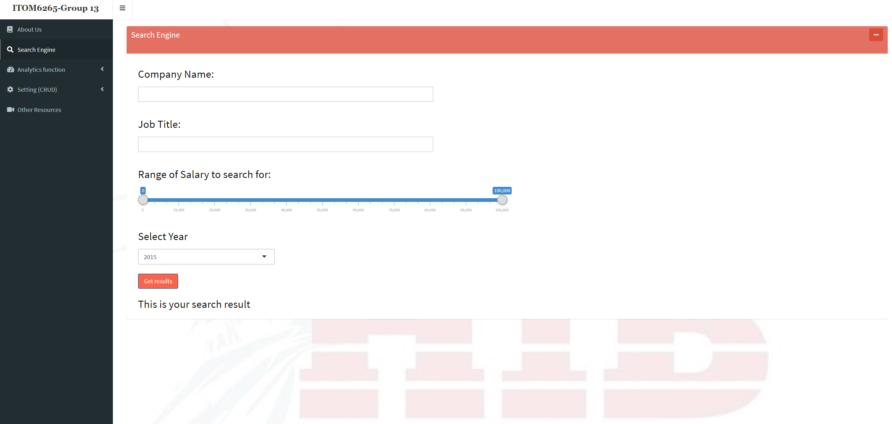
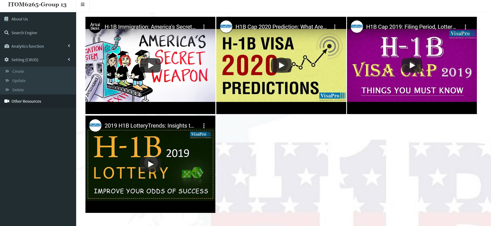

Today’s US labor market is highly competitive and suffers from a lack of transparency. International students seeking full time employment are at a further disadvantage in comparison to their domestic peers as they are subject to strict and circuitous foreign labor laws, visa constraints and a lack of information. While labor laws are at the discretion of regulatory bodies, there is an opportunity to meet the demand for information in the labor market available to international students.
The application will present international students with information on the success rate an employer has in sponsoring foreign labor visas, how students can navigate through the regulatory constraints set by the Department of Labor and the skill sets that are in high demand in the US labor market.
You can find the web application and try it Here
Simplicity is at the core of the design in order to allow for clarity in content, robustness of data and performance of the application. The design combines the H1B data and corresponding employer data from the USCIS and Department of Labor websites. The following steps were taken to convert the raw CSV data into relational tables:
1. Explore the existing data and finalize the tables and attributes that are relevant to the app use case:
2. Normalize the data in 1NF Extract information City, State, Zip code from Address data such as 8601 N Central Expy, Dallas, TX 75080 to City:Dallas, State:TX, Zip code:75080
3. Formulate new attributes , i.e. location latitude and longitude from the worksite
4. Create a new scheme and table structure once the basic design was ready
5. Clean the data before adding constraints:
6. One to Many relationships:
7. Added UPDATE and DELETE constraints on the foreign key relationship in order to support consistency of data between tables. Key elements of this included:
The Introduction tab displays a dashboard of general statistics on the H1B employment visa. Features:
The Analytics tab displays a table of employers and their successful H1B petitions, a bar chart to visualize the success rate and a filter to limit the number of companies and a map. Features:
Under the Setting (CRUD) tab create, read, update and delete functions are built in. Features:
Other Resources
